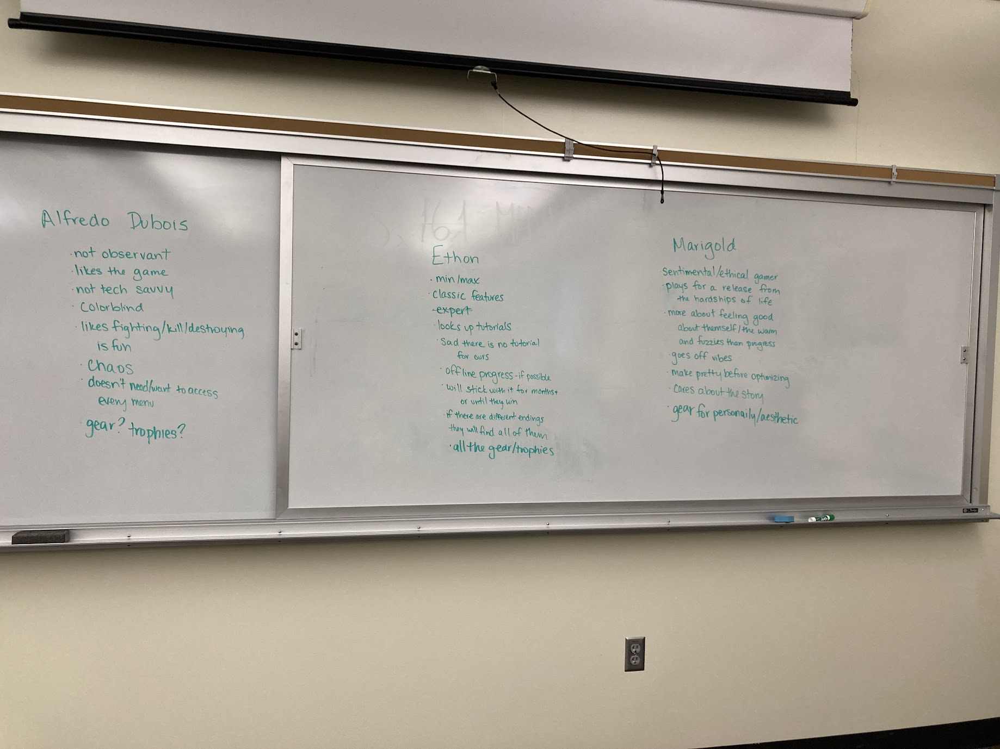
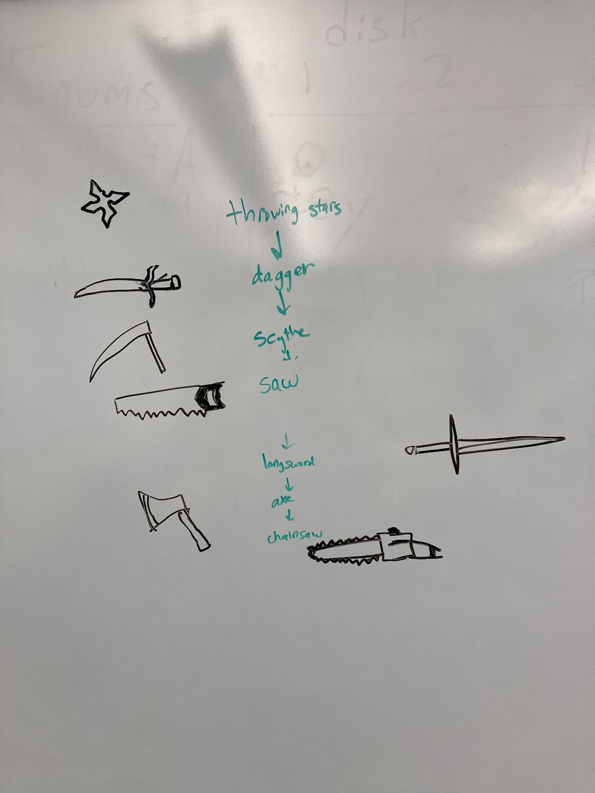
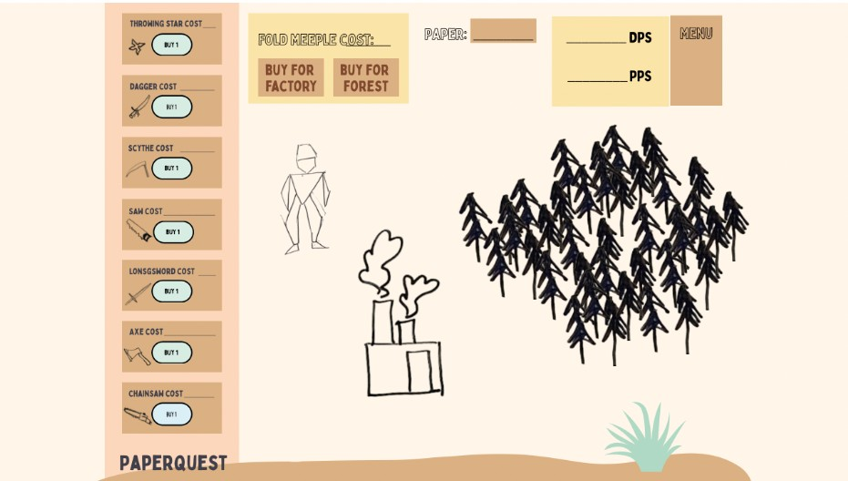
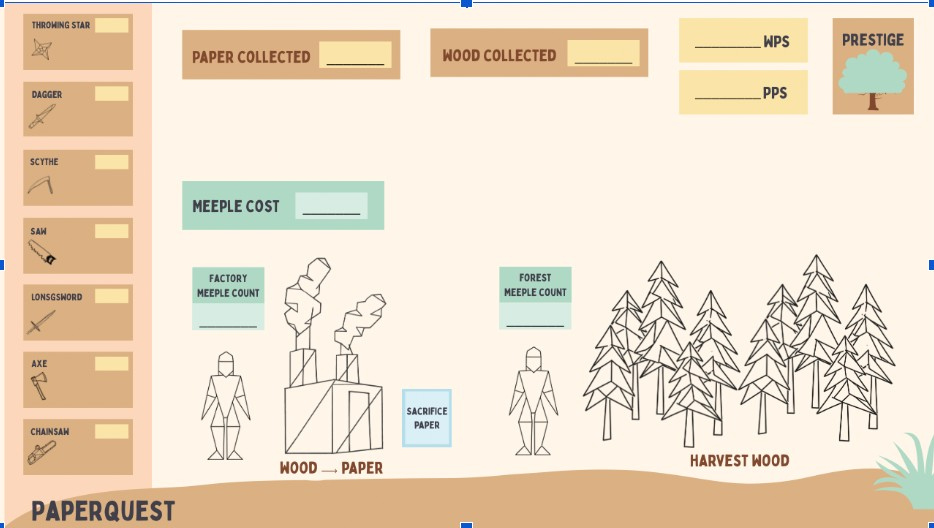
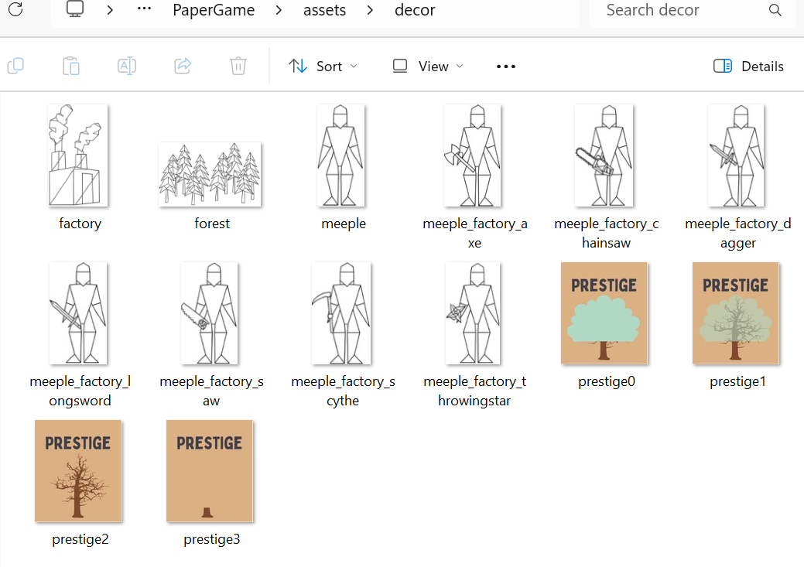
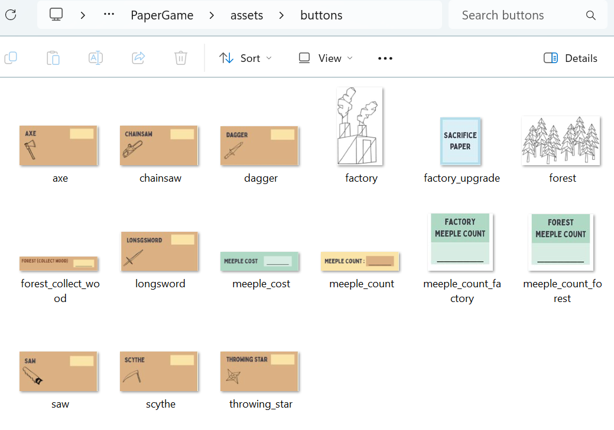

Relevant artifacts include collaborative whiteboard exercises, gameplay interviews,
observational testing notes, and Canva interface redesigns created during the PaperQuest
development process.
Visual Samples

Persona exercise exploring different player motivations and behaviors.
I conducted gameplay interviews and observational testing sessions, documented user reactions
and usability problems, and used those findings to redesign interface elements in Canva.
I specifically contributed to improving visual hierarchy and interface consistency after identifying
confusion during testing. I also participated in collaborative needfinding exercises such as
persona creation and brainstorming common frustrations in idle games.
Description
To identify user needs, our team used interviews, gameplay observation, persona
construction, and collaborative brainstorming exercises. I conducted a semi-structured gameplay
observation session with my younger sister, who regularly plays casual games but had little
experience with idle games. During the session, I observed how she interacted with the interface
without guidance and documented moments of confusion, hesitation, and engagement.
Through this process, I learned that players unfamiliar with idle games often struggled to
distinguish decorative interface elements from clickable interactions. My sister initially did
not understand which parts of the screen were interactive because many visual elements blended
together. Based on these findings, I redesigned several Canva interface assets and reorganized
the layout so that gameplay interactions, PPS/WPS statistics, and progression systems appeared
in clearer visual groups with more consistent button styling.
Ideation
Early Brainstorming Artifacts
Relevant artifacts include collaborative brainstorming boards, gameplay progression sketches,
weapon progression concepts, and Canva interface drafts created during early project planning.
Visual Samples

Early progression sketches exploring unlock systems and gameplay pacing.
My Contributions
I participated in brainstorming the mechanical progression of weapons and meeple elements, as well as
player archetypes. I also contributed visual ideas for the weapon progression system and
redesigned several gameplay assets and layouts in Canva based on ideation and testing feedback.
Description
To generate solutions for user needs, our team used activities like brainstorming sessions, persona exercises,
visual sketching, and drawing our concepts on a whiteboard to develop our project. The “World’s Worst Idle Game”
exercise helped us identify frustrating mechanics we wanted avoid such as unclear progression, overwhelming menus, and
inconsistent interfaces. This activity helped guide later design decisions by showing what types
of interaction problems we should prevent.
I also contributed to visual ideation by making progression sketches and Canva interface concepts.
Over time, early ideas such as papyrus crafting evolved into the final factory and meeple systems
because they better supported automation, visible progression, and long-term engagement with the storytelling
aspects of the project. These ideation activities helped the team balance gameplay with
a more visually stylized interface.
Prototyping
Early Brainstorming Artifacts
Relevant artifacts include paper prototypes, early gameplay mockups, Canva asset redesigns,
and before-and-after interface screenshots from the PaperQuest project.
Visual Samples
Early paper prototype used to experiment with gameplay flow and get feedback about what needed improvement.

Earlier interface layout before major redesigns and visual grouping changes.

Final interface after visual hierarchy and progression redesign revisions.

Decorative assets created to improve visual consistency and progression clarity.

Button asset redesigns created in Canva to improve interaction clarity.
My Contributions
I helped transform early paper concepts into digital layouts and Canva assets. I redesigned
portions of the interface after testing, contributed to reorganizing the gameplay layout, and
helped refine the visual hierarchy based on prototype feedback.
Description
Our prototypes were designed to answer several key design questions, including whether players
understood which interface elements were interactive, whether progression systems felt rewarding,
and whether separating gameplay systems into factory and forest regions improved readability.
We began with paper or hand drawn prototypes such as sketches and paper systems before transitioning
into digital layouts and creating different versions of the meeple based on the initial sketches.
As development progressed, I helped redesign the interface using Canva-created modular assets
instead of relying on a single background image with overlaid numbers. Through testing and
iteration, we discovered that players responded more positively when interactive buttons,
resource displays, and progression systems were visually separated into clearer groups.
The final version consolidated PPS/WPS statistics at the top of the screen while separating
factory, forest, and prestige systems into distinct gameplay regions of the screen.
Evaluation
Early Brainstorming Artifacts
Relevant artifacts include observation notes, interview reflections, interface redesign iterations,
and revised Canva assets created after usability testing.
My Contributions
My team and I conducted user testing sessions, observed participant behavior, documented usability problems,
and implemented interface revisions based on player feedback. I specifically redesigned visual
interaction indicators and reorganized the screen layout after Maya revealed some of the things that
her interview participants mentioned being confusing and/or inconsistent.
Description
Our evaluation process combined gameplay observation with semi-structured interviews in order
to assess whether the interface and progression systems successfully addressed player needs.
Participants were asked to play the game with minimal instruction while I observed how they
interacted with the interface, where they hesitated, and which mechanics they found rewarding
or confusing.
The evaluation process revealed that users unfamiliar with idle games struggled to identify
clickable objects because earlier interface versions did not clearly distinguish interactive
elements from passive information displays. However, testing also showed that players became
more engaged once automation systems increased visible progression and resource growth.
Based on these findings, I redesigned several Canva assets and reorganized the screen layout
to improve visual consistency, readability, and interaction clarity.